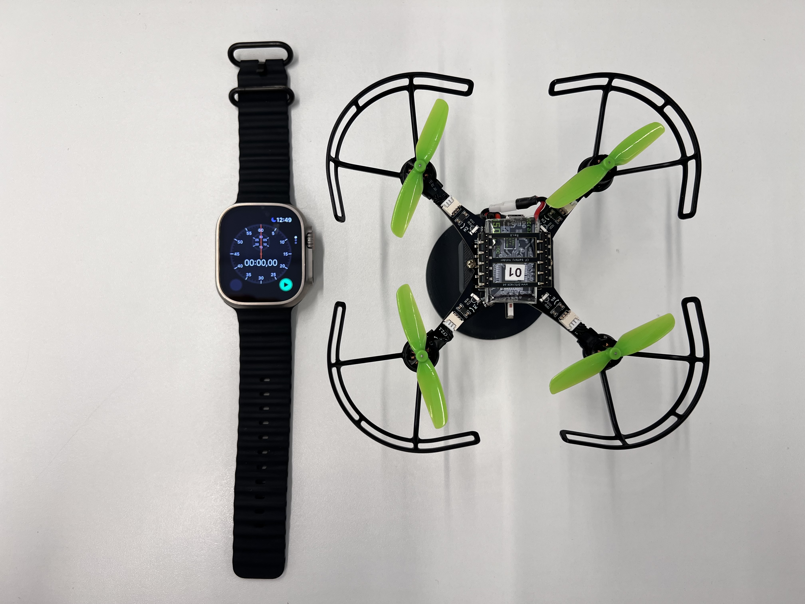

Identificação da constante de arrasto
Nesta secção, você irá determinar experimentalmente a constante de arrasto das hélices \(k_d\).
Fundamentos teóricos
As hélices de um quadricoptero atuam como superfícies aerodinâmicas, acelerando o fluxo de ar através delas. Isso consome energia das baterias e produz forças de sustentação e torques de arrasto no quadricoptero. Já deduzimos que o torque de arrasto de uma hélice \(\tau\) é proporcional à velocidade angular da hélice \(\omega\) ao quadrado.

Onde:
- \(k_d\) - Constante de arrasto (\(N.m.s^2\))
Procedimento experimental
Você vai medir o torque de arrasto \(\tau\) das hélices com um suporte(1) que restringe todos os graus de liberdade do drone deixando apenas o ângulo de guinagem \(\psi\) livre.
- Para prender o quadcoptero no suporte, você precisa encaixá-lo pela lateral e depois prender dois parafusos.

Sabendo o momento de inércia do drone \(I_{zz}\) e o ângulo de guinagem ao longo do tempo \(\psi\), é possível determinar o torque de arrasto total das hélices \(\tau_z\) através de uma análise dinâmica. Para realizar a leitura do ângulo de guinagem ao longo do tempo, você deve filmar o procedimento no modo câmera lenta de seu celular com um cronômetro no campo de visão.

Você deve carregar no drone um programa que faz com que as hélices \(1\) e \(3\) rotacionem com velocidade angular de \(1.000\,\text{rad/s}\) e as hélices \(2\) e \(4\) com \(2.000\,\text{rad/s}\). Como as hélices \(1\) e \(3\) giram no sentido horário e as hélices \(2\) e \(4\) no anti-horário, haverá um torque resultante que fará com que o drone rotacione no sentido anti-horário. Para cada quarto de volta (\(90^{\circ}\)), você deverá anotar o tempo decorrido. Você deverá realizar o experimento três vezes e tirar uma média. Para facilitar o experimento, você pode ligar/desligar as hélices com os botões Take off e Land do Command Based Flight Control através do CFClient.

Crie um arquivo chamado drag_constant.c dentro da pasta src/identification com o seguinte código(1):
- Não esqueça de atualizar os valores dos coeficientes dos motores \(a_2\) e \(a_1\) (linhas 8-9) estimados anteriormente.
#include "FreeRTOS.h" // FreeRTOS core definitions (needed for task handling and timing)
#include "task.h" // FreeRTOS task functions (e.g., vTaskDelay)
#include "supervisor.h" // Functions to check flight status (e.g., supervisorIsArmed)
#include "commander.h" // Access to commanded setpoints (e.g., commanderGetSetpoint)
#include "motors.h" // Low-level motor control interface (e.g., motorsSetRatio)
// Motor coefficients of the quadratic model: PWM = a_2 * omega^2 + a_1 * omega
const float a_2 = 0.0f;
const float a_1 = 0.0f;
// Global variables to store the desired setpoint, the current state (not used here),
// and the computed PWM values for different motor speeds
setpoint_t setpoint;
state_t state;
float pwm_1, pwm_2;
float omega_1, omega_2;
// Main application
void appMain(void *param)
{
// Infinite loop (runs forever)
while (true)
{
// Check if the drone is armed (i.e., ready to fly)
if (supervisorIsArmed())
{
// Fetch the latest setpoint from the commander
commanderGetSetpoint(&setpoint, &state);
if ((setpoint.position.z) > 0)
{
// Set two different angular velocities for the motors
// Motors M1 and M3 will spin at 2000 rad/s
// Motors M2 and M4 will spin at 1000 rad/s
// This configuration induces pure yaw rotation (spinning in place)
omega_1 = 2000.0f;
omega_2 = 1000.0f;
// Convert angular velocities to PWM using the motor model
pwm_1 = a_2 * omega_1 * omega_1 + a_1 * omega_1;
pwm_2 = a_2 * omega_2 * omega_2 + a_1 * omega_2;
}
else
{
// If Z setpoint is not positive, apply minimal power to all motors (for idle spin)
pwm_1 = 0.1f;
pwm_2 = 0.1f;
}
}
else
{
// If not armed, stop all motors
pwm_1 = 0.0f;
pwm_2 = 0.0f;
}
// Apply PWM to motors:
// M1 and M3 get pwm_1 (corresponding to 2000 rad/s)
// M2 and M4 get pwm_2 (corresponding to 1000 rad/s)
// This asymmetric configuration results in yaw motion
motorsSetRatio(MOTOR_M1, pwm_1 * UINT16_MAX);
motorsSetRatio(MOTOR_M2, pwm_2 * UINT16_MAX);
motorsSetRatio(MOTOR_M3, pwm_1 * UINT16_MAX);
motorsSetRatio(MOTOR_M4, pwm_2 * UINT16_MAX);
// Wait for 100 milliseconds before the next iteration (10 Hz control loop)
vTaskDelay(pdMS_TO_TICKS(100));
}
}
As etapas para coletar os dados são as seguintes:
- Garanta que a bateria do drone está carregada
- Prenda o drone no dispositivo e posicione um cronômetro ao seu lado
- Arme o drone apertando o botão
Armno CFClient - Comece a filmar com seu celular no modo câmera lenta
- Ligue os motores com o Command Based Flight Control do CFClient
- Espere o drone dar duas voltas e pare de filmar
Após o experimento, você deverá coletar dados para preencher a tabela abaixo.
| \(\psi \, (^{\circ})\) | \(t_1 \, (s)\) | \(t_2 \, (s)\) | \(t_3 \, (s)\) |
|---|---|---|---|
| \(0\) | |||
| \(90\) | |||
| \(180\) | |||
| \(270\) | |||
| \(360\) | |||
| \(450\) | |||
| \(540\) | |||
| \(630\) | |||
| \(720\) |
Análise de dados
Utilizando os dados coletados, você deverá ajustar uma curva que correlacione o ângulo de guinagem \(\psi\) com o tempo \(t\) da hélice (note que você precisa converter o ângulo de guinagem de \(^{\circ}\) para \(rad\)).

Aplicando um torque constante, o deslocamento angular em função do tempo é dado por:
$$ \psi = \frac{\tau_z}{2 I_{zz}} t^2 $$ Já deduzimos que esse torque é dado pela soma dos torques de arrasto de cada hélice \(\tau_i\), que por sua vez são proporcionais às velocidades angulares das hélices \(\omega_i\) ao quadrado:
Como \(\omega_1 = \omega_3 = 1.000 \, rad/s\), \(\omega_2 = \omega_4 = 2.000 \, rad/s\) e \(I_{zz} = 4 \cdot 10^{-5} \, kg.m^2\). substituindo na equação anterior:
Ou seja, o tipo de função mais adequado para realizar esse ajuste de curva é uma função polinomial de 2º grau cujos coeficientes de ordem zero e um são nulos.
Determine o valor de \(k_d\) fazendo esse ajuste de curva (dica: utilize o Curve Fitting Toolbox do MATLAB). Anote o valor obtido em algum lugar pois ele será utilizado em breve.
Validação dos resultados
Compare o resultado obtido com o estimado anteriormente. É esperado que a constante de sustentação \(k_d\) seja da ordem de grandeza de \(10^{-10}N.s^2\).